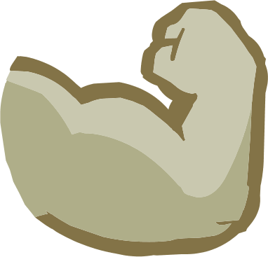
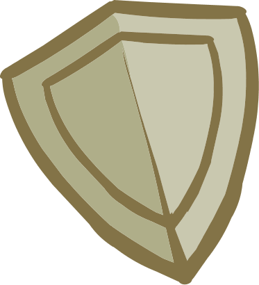
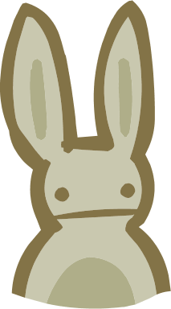

Castle Crashers Wiki
Atributos
Os Atributos são uma das quatro características principais que podem ser melhoradas ao longo de Castle Crashers. Para aumentar esses atributos, o jogador precisa derrotar inimigos e ganhar pontos de experiência (XP). Quando experiência suficiente é acumulada, o personagem sobe de nível e recebe pontos de habilidade para distribuir entre os atributos disponíveis. Até o nível 20, o jogador recebe dois pontos de habilidade por nível. Depois disso, passa a receber apenas um ponto por nível. Cada atributo pode ser aprimorado até 24 vezes utilizando esses pontos. Ao investir um total de 96 pontos de habilidade — o equivalente aproximadamente ao nível 78 — o personagem alcança o máximo de seus atributos básicos. Além disso, sempre que sobe de nível, o personagem ganha automaticamente mais pontos de Vida. A cada dez níveis alcançados, os atributos de Força e Magia também recebem aumentos extras. Por causa desses bônus automáticos, os atributos de Força e Magia continuam evoluindo até o nível 90, enquanto a Vida pode continuar aumentando até o nível máximo do jogo, o nível 99. Além dos pontos distribuídos pelo jogador, também é possível aumentar os atributos utilizando armas especiais e os Animal Orbs, companheiros que fornecem bônus adicionais durante a aventura.
Informações dos Atributos
Força

Força aumenta o dano dos ataques físicos do personagem. Porém, investir muitos pontos nesse atributo no início pode atrapalhar a evolução, já que o XP do jogo é baseado na quantidade de golpes acertados, e não no dano causado. Como inimigos derrotados rapidamente rendem menos acertos, o jogador pode ganhar menos experiência. Por isso, é recomendado melhorar a Força aos poucos durante o começo do jogo.
Magia
Magia influencia os ataques mágicos do personagem, aumenta a velocidade de recarga da barra de magia e reduz o custo das habilidades. Também aumenta o dano mágico, sendo mais útil em dificuldades maiores, como o Insane Mode.
Defesa

Defesa aumenta a quantidade de vida do personagem e reduz o dano recebido dos inimigos. Esse atributo também diminui o impacto dos ataques, permitindo que o jogador resista melhor durante as batalhas e sobreviva por mais tempo, principalmente contra chefes e grupos de inimigos.
Agilidade

Agilidade melhora a velocidade de movimento do personagem e aumenta a velocidade e o dano dos ataques com arco e flecha. Além disso, facilita a execução de combos, esquivas e ataques aéreos, tornando o combate mais rápido e dinâmico. É um atributo muito útil para jogadores que preferem velocidade e mobilidade durante as lutas.
Castle Crashers Wiki
Trabalho final Desenvolvimento Web 1. Desenvolvido com HTML e CSS.
©2026